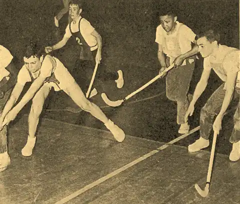
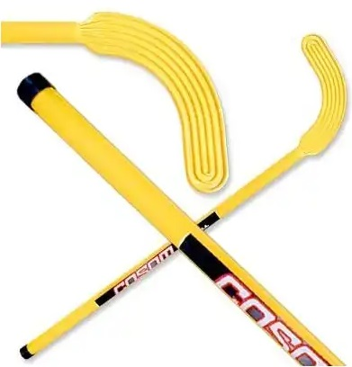

Hello
In the early 1970s, in the Swedish town of Gothenburg, floorball started off as an activity that students would play after school hours. This schoolyard pastime developed over a span of a decade, and began showing up in nearby Nordic countries. This Nordic ancestry is evident in the different names Floorball is known by. In Finland, it is known as Salibandy. In Sweden and Norway, it is called innebandy, and the Swiss and Germans term it unihockey. This Nordic ancestry is evident in the different names Floorball is known by. In Finland, it is known as Salibandy. In Sweden and Norway, it is called innebandy, and the Swiss and Germans term it unihockey.
The initial floorball sticks did not resemble those that we see today. Cosom hockey sticks, as well as other early forms of floorball sticks, were used instead. They got their inspiration from the lesser known ice sport of bandy.
Formal rules, clubs and national associations soon followed in that respective order, and finally the International Floorball Federation (IFF) was founded in 1986. Currently, there are 57 members in the IFF, and more than 80 countries have hosted Floorball games before. A decade after the IFF’s formation, the first world championships were held in Sweden, and the world’s two largest leagues were developed in the years 1986 and 1995.
Basic rules of Floorball
Technique Guides for Floorball